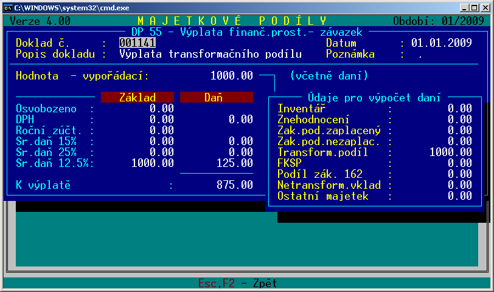

Popis změn
2014-2026
2008-2013
1999-2007
1995-1998
Verze
4.17 - distribuce 1.1.2014 - ke stažení

- Upraven export vyúčtování srážkových daní pro portál
EPO doplněním pracoviště finančního úřadu.
- Aktualizován číselník pošt a obcí k 1.12.2013. U
souboru ZV_POSTY.DBF upravena struktura souboru.
- V nabídce Výstupy v podnabídkách Podílové
listy, Karty pohybů, Volitelné sestavy rozšířena možnost hromadného označení
podílových listů klávesou <F10> přes <Podmínku pohybu>. Lze
označit podílové listy pomocí omezení druhu pohybu a rozsahu období v
nichž jsou doklady pořízeny.
Příklad:
Takto lze např. vybrat podílové listy osob, které např. v prosinci 2013 10
let neměly pohyb. Do kombinované podmínky se zadá rozsah období od 12.2003
do 12.2013, u ostatního zůstane plný rozsah. Tímto se označí všechny listy s
pohybem. Pak již stačí zvolit Inverzi označení a budou označeny listy bez
pohybu v daném období.
Toto lze využít např. pro zjištění závazků, o kterých lze uvažovat, že by
mohly být vyřazeny z evidence.
To souvisí s novelou zákona o daních z příjmů právnických osob a to
§ 23
odst. 3 písm. a) bod 14. viz Legislativa.
Podle tohoto ustanovení se počínaje zdaňovacím obdobím roku 2014 zvyšuje
daňový základ o "částku závazku zachyceného v rozvaze, který zanikl jinak
než jeho splněním, započtením, splynutím práva s povinností u jedné osoby,
dohodou mezi věřitelem a dlužníkem, že se dosavadní závazek nahrazuje
závazkem novým nebo narovnáním, pokud nebyla podle právních předpisů
upravujících účetnictví zaúčtována ve prospěch výnosů nebo se o tuto částku
závazku nezvyšuje výsledek hospodaření podle bodu 10; toto se nevztahuje na
závazek, z jehož titulu vznikl výdaj (náklad), ale je výdajem (nákladem) na
dosažení, zajištění a udržení zdanitelných příjmů, jen pokud byl zaplacen".
Výklad tohoto ustanovení lze pojmout i tak, že závazky z promlčených
majetkových podílů, z vypořádacích podílů a dividend, které budou od roku
2014 vyřazeny z účetnictví, by měly zvýšit daňový základ. V případě obav z
uplatnění tohoto ustanovení doporučuji situaci řešit do konce roku 2013 a
rozhodnout o vyřazení promlčených závazků z evidence včas.
Verze
4.16 - distribuce 1.1.2013 - ke stažení
- Doplněn export/import osobních údajů v nabídce
Výstupy-Uživatelské sestavy
- Doplněna další varianta tisku prostřednictvím programu
PrFile32. Spuštění tisku se provádí klávesou <F10>.
- Aktualizován číselník pošt a obcí k 3.12.2012.
- Aktualizován číselník Sazby DPH definicí od 1.1.2013
se sazbami 15 a 21 %.
Verze
4.15 - distribuce 16.7.2012 - ke stažení
- Při tvorbě poukázek B pro program Pošta2002 se do
adresy do údaje Obec doplní Pošta v případě, že údaj Obec není
vyplněn.
- Upraveno naplnění daňové tabulky při pořízení
výdejových dokladů. Při výplatě vypořádacího podílu se u dokladů, kde se
pracuje s nabývací hodnotou vkladu nabízelo uplatnění nabývací hodnoty
jen do výše úhrady vkladu. Pokud tedy byl vypořádací podíl větší než původní
vklad, program počítal srážkovou daň z částky nad původní vklad.
Pro správnou funkci je nutno v číselníku <Automatické výpočty - Pořadí
uplatnění zdrojů> přesunout klávesou <Ctrl+šipka nahoru> položku
Nabývací hodnota na první místo seznamu.
- Doplněn údaj <Telefon> a <E-mail> do
identifikačních údajů osob. Tyto údaje jsou ukládány do nového souboru s
osobními údaji MP0OSUD.D00, který se vytvoří ve složce DAT. Do tohoto
souboru je také přesunut bankovní účet osob, který byl doposud v číselníku
MP21BASP.D00. Pokud je při spuštění programu nalezen tento číselník, je
nabídnut převod údajů do nového MS osobních údajů. Poté je číselník zrušen.
Do nabídky <Výstupy-Podílové listy> pod klávesu F6 doplněna sestava
Osobní údaje, která obsahuje výše zmiňované osobní údaje.
- Osobní údaje lze zadávat v nabídce
<Vstupy-Pořízení> klávesou <F4-Osobní údaje>.
- Formulář s identifikačními údaji osoby byl rozšířen o
náhled do textové poznámky vybrané osoby. Přepnutí do editace poznámky lze
provést klávesou <Tabelátor> nebo klávesou <Enter> na údaji Poznámka.
- Změny každého identifikačního údaje osoby se nyní
zapisují do záznamu o provozu programu (MP.log). Je vypsán stav před změnou
a po změně.
- V seznamu osob v nabídce <Vstupy-pořízení> lze
zobrazit náhled na detail sumárního podílového listu klávesou <Ctrl_F2>.
Nabídka je dostupná při spuštění programu ve více než 25 řádkovém režimu.
Nastavení se ukládá.
Verze
4.14 - distribuce 11.12.2011 - ke stažení
Verze
4.13 - distribuce 24.8.2011 - ke stažení
- Opraven tisk prostřednictvím programu AMBON.
Úpravou v předchozí verzi se chybně nastavovala délka stránky. U
jednostránkových sestav se pak tiskly řádky proloženě. Opraveno.
- Doplněna nabídka <Přehled daní - Export vyúčtování
srážkových daní pro elektronické podání EPO>.
Touto akcí je vytvořen soubor DPSVD.XML, který lze importovat na
portál EPO.
- Nabídka <Přehled daní> byla přeorganizována.
Má 3 podnabídky. Při spuštění podnabídky se nabídne vhodný rozsah období.
- Zdanitelná plnění DPH - do sestavy standardně
nabídnou doklady z aktuálního měsíce.
- Vyúčtování srážkových daní - spuštěním této
podnabídky se nabídne výběr dokladů z období od prosince předcházejícího
roku do listopadu aktuálního roku a to z důvodu termínu pro odvod srážkové
daně, který je do konce následujícího měsíce po provedení výplaty.
- Roční zúčtování daně - do sestavy jsou
zahrnuty doklady z aktuálního roku
- Doplněno zjišťování nových verzí programu na
internetu. Toto je prováděno při spuštění programu Majetkové podíly při
zapnutém přepínači <Kontrolovat nové verze na internetu>.
Při zjištění odlišné verze na internetu se do počítače stáhne reinstalační
soubor, spustí se a program Majetkové podíly se ukončí. V průběhu provádění
reinstalace nesmí dojít ke spuštění programu MP.
Tento způsob reinstalace je navržen jako tzv. bezobslužný. To znamená, že v
průběhu reinstalace není obsluze nabídnuta složka pro umístění programu a
typ instalace (plná, reinstalace, vlastní výběr součástí instalace). Obsluha
tudíž nemá co poplést. Reinstalují se tytéž součásti, jako při stažení
plného instalačního souboru z webu se spuštěním typu instalace "Reinstalace
programu".
Pokud zjištění nové verze při spuštění programu zdržuje (cca 1 sec), lze
toto vypnout v nabídce Nastavení-Přepínače. Kontrolu nové verze lze spustit
ručně v nabídce <Servis-Kontrola verze na internetu>.
- Aktualizován číselník pošt a obcí k 29.7.2011.
Verze
4.12 - distribuce 23.6.2011 - ke stažení
- Opraven tisk prostřednictvím programu AMBON.
Sestavy vytvořené pomocí formulářů se tiskly příliš malým písmem v případě,
že se na konci některého řádku vyskytovaly mezery a tím se šířka sestavy
zjistila chybně. Nyní jsou při
přípravě sestavy odstraněny mezery na konci každého řádku.
- V nabídce <Prohlížení dokladů> doplněna
možnost hromadného označení dokladů pomocí Kombinované podmínky.
Výběr dokladů lze omezit rozsahem období OD DO, skupinou osob, kódem nabytí
podílového listu, druhy pohybu, závody a středisky, ke kterým jsou osoby
přiděleny.
Tvorba sestav z označených dokladů přesunuta pod klávesu <F6>.
Doplněna sestava <Opis dokladů>.
- Do nabídky <Výstupy - Platby> doplněna sestava
<Výčetka platidel>.
- Při prohlížení sestav se lze přepínat mezi režimem
prohlížení a režimem editace klávesou <Tabelátor>.
- Aktualizován číselník Pošty, Obce a části obcí.
- Při pořízení dokladu s převodem majetku mezi osobami
lze klávesou <F5-Koeficient> vyplnit koeficient, kterým se přepočtou všechny hodnoty v
dokladu. Doplněno z důvodu usnadnění rozdělení majetku např. mezi více
dědiců.
Verze
4.11 - distribuce 6.2.2011 - ke stažení
- V nabídce <Prohlížení dokladů> doplněna možnost
označení dokladů a provádění akcí s vybranými doklady. Doklady lze
jednotlivě označit klávesou <Insert>, nebo hromadně
klávesou <F10>. Hromadně lze označit všechny doklady, doklady z aktuálního
období, doklady pro zvolenou osobu, nebo pomocí podmnožiny. Vybrané doklady
lze hromadně rušit nebo u nich změnit období.
Změna období v
dokladech je vhodná pro případ, kdy jsou doklady omylem pořízeny do
jiného období, než bylo zamýšleno. Přesunutím dokladů do jiného měsíce
nejsou aktualizovány matriční soubory podílových listů jak v původním období
dokladu, tak v novém období, do kterého jsou doklady přesunuty. Po provedení
této akce je nutno provést servisní akci <Obnova - Rozsah období [od-do]>.
Dále lze z označených dokladů vytvořit sestavu <Přehled změn vkladů, závazků
a vypořádacích podílů>. V sestavě je použito třídění jako v seznamu dokladů.
- Provedena úprava zaúčtování prominutí a promlčení
závazků. Pro zpřehlednění změn zrekapituluji původní řešení v programu do
verze 4.10:
| Druh pohybu |
Popis |
Má
dáti |
Dal |
| 25 |
Odpuštění závazku |
470100 |
413600 |
| 26 |
Odpuštění/promlčení
závazku z vypořádacího podílu |
479201 |
688600 |
| 27 |
Promlčení závazku |
479100 |
688600 |
Po zpřesnění výkladu Sdělení ke zrušení pokynu D-108 s
přihlédnutím k interpretacím Národní účetní rady I-15 a I-19 bylo zaúčtování
prominutí a promlčení závazků upraveno následovně:
| DP |
Název
DP |
Kódy
nabytí |
Má
dáti |
Dal |
Poznámka |
| 25 |
Prominutí závazku (ČÚS 019 - právně
zaniklé závazky se vyúčtují ve prospěch ostatních výnosů) |
01 až
04 |
479100
(479200) |
668960 |
nedaňový
výnos podle ustanovení § 23/4 písm.m) ZDP |
| 05 až
06 |
379810 |
668621 |
závazky
z postoupených pohledávek |
| 07 |
325890 |
668622 |
závazky
z úroků |
| 08 |
364000 |
668622 |
závazky
z nevyplacených dividend |
| 26 |
Prominutí
vypořádacího podílu (ČÚS 019 - právně
zaniklé závazky se vyúčtují ve prospěch ostatních výnosů) |
01 až 99 |
479201 |
668623 |
závazky z
vypořádacích podílů |
| 27 |
Promlčení závazku |
01 až
04 |
479100
(479200) |
422600 |
transformační
závazky (interpretace NÚR č. I-19) |
05,06,07,
09 až 99 |
379810 |
668624 |
závazky z
postoupených pohledávek, úroků a jiných závazků účtováno do výnosů |
| 08 |
364000 |
422610 |
dividendy
(interpretace NÚR č. I-15) |
| 28 |
Promlčení
vypořádacího podílu |
01 až 99 |
479201 |
422600 |
závazky z
vypořádacích podílů
(interpretace NÚR č. I-19) |
Bylo nutno zavést nový druh pohybu 28 - promlčení
vypořádacího podílu.
- Do účtové osnovy byly zavedeny nové účty
| Účet |
Popis |
| 422600 |
Promlčené závazky
vzniklé z vlastního kapitálu (NUR I-19) |
| 422610 |
Promlčené dividendy
(NUR I-15) |
| 668620 |
Oceňovací rozdíl při
vypořádání majetkových podílů |
| 668621 |
Prominuté závazky z
postoupených pohledávek |
| 668622 |
Prominuté jiné
závazky |
| 668623 |
Prominutý závazek z
vypořádacích podílů |
| 668624 |
Promlčené ostatní
závazky |
| 668960 |
Prominuté závazky z
transformace § 23/4 m |
| 778600 |
Odepsané promlčené závazky |
| 761600 |
Vyrovnání stran k
účtu 778600 |
- Upravena instalace programu. Od této verze již nebude
udržována druhá sada číselníku <Účtový předpis rozvahově> se zaúčtováním
oceňovacího rozdílu při naturálním vypořádání na účet 427120. V distribuci
bude nastaveno zaúčtování výsledkově na účet 668620.
- Při použití DP 27 a 28 na podnicích, které si
vnitropodnikovou směrnicí stanoví účtování do výnosů doporučuji po provedení
zaúčtování účetním dokladem vystornovat obrat účtu 422600 nebo 422610 a
přeúčtovat jej na účet 6686xx.
- V případě dobrovolného odpisu promlčených závazků by
měly být tyto závazky zachyceny v podrozvahové evidenci. Zaúčtování na
podrozvahové účty pro DP 27 a 28 je v účtovém předpisu definováno druhým
zápisem 761600/778600. K těmto účtům lze vytvořit inventurní soupis pomocí
nabídky Volitelné sestavy, kam byl doplněn formulář MP0FS005.FRM - Promlčené
závazky.
- Program byl při spuštění některých akcí blokován
antivirem AVG 2011 (při zálohování, zaúčtování a pod.). Příčinou bylo
vytváření dávkového souboru, který testoval existenci adresáře a pokud nebyl
k dispozici, jeho vytvoření. Proto byl program upraven tak, aby zmiňované
akce byly provedeny bez použití dávkového souboru.
Verze
4.10 - distribuce 27.11.2010 - ke stažení
- Opravena práce s externím programem Wsvc.exe pod
Windows 98. Problém spočíval v odlišném chování volání příkazového řádku,
kdy pod W98 se nečeká na ukončení volaného programu, kdežto v XP,
Vista, W7 nikoliv. Pokud jste instalovali verzi 4.09 na počítačích s
W98, nutno přeinstalovat.
Verze
4.09 - distribuce 21.11.2010 - ke stažení
- Do distribuce zařazeny 2 sady číselníku MP06UCPR -
účtový předpis. Liší se v zaúčtování oceňovacího rozdílu u DP 51, 52, 53,
56, 59. Instalační program byl upraven tak, že v části <Číselníky - Účtový
předpis> lze zvolit z nabídky Účtový předpis - oceňovací rozdíl rozvahově
nebo Účtový předpis - oceňovací rozdíl výsledkově. Jako výchozí je nastaveno
výsledkové účtování oceňovacího rozdílu, které tímto považujte za
doporučené.
V tomto účtování je rozdíl vypořádací a účetní hodnoty nastaven na účet
668620. Doplňte si tento účet do účtové osnovy v účetním programu.
Upozorňuji, že při tomto výsledkovém účtování se do zaúčtování přebírá
závod, středisko, výkon, stoj, pozemek/stáj, zakázka z dokladu. Pokud není
vyplněno, je doplněno implicitní číslo závodu, střediska a výkonu z nastavení programu z nabídky
<Číselné údaje>.
- Doplněno otestování dostupnosti externích programů (Arj.exe,
Lister.exe, DosPrinter.exe) před pokusem o jejich spuštění. Pokud nejsou k
dispozici, program nabídne jejich stažení z internetu. K tomuto je použit
program Wsvc.exe. Pokud by na tento program reagoval firewall antivirového
programu nebo operačního systému Windows, je nutno povolit komunikaci. U
některých typů antivirových programů je potřeba zaškrtnou vytvoření tzv.
pravidla, aby se při další komunikaci programu Wsvc s internetem
nedotazoval.
- Opravena sestava Inventurní soupis s úplnou
adresou, ve které se rozšířením adresy nezarovnával poslední sloupec.
- Doplněno zaúčtování a vytvoření spojovacího souboru v
průběhu měsíční uzávěrky.
- Doplněny nové údaje z předchozí verze (způsob úhrady,
část obce) do formulářů sestav a do exportu do XML.
Verze
4.08 - distribuce 14.11.2010 - ke stažení
- Opravena chyba převodu struktury konfiguračního souboru
v předchozí verzi, při které se nepřevedlo nastavení cesty pro zálohy. Pokud
jste měli nastavenu cestu pro jiné umístění zálohy např. na flash disk ( E:\MajPod
), je nutno v nastavení programu znovu nastavit.
- Opravena chyba v exportu do XML. Při exportu dat z
matričního souboru podílových listů se vypisovaly hodnoty pouze z posledního
podílového listu osoby.
- V nabídkách, kde lze volit výběr zařízení pro
otevření nebo uložení souboru, doplněna možnost <Jiné umístění>. Touto
nabídkou je vyvolán dialog Windows pro výběr adresáře. Při celoobrazovkovém
provozování programu může být použití této nabídky pro obsluhu matoucí,
protože dojde k minimalizaci programu Majetkové podíly do systémové lišty.
Po ukončení výběru adresáře z dialogu je nutno se do programu vrátit.
Vycházím z předpokladu, že většina uživatelů již provozuje program v okně s
využitím 43 nebo 50 řádkového režimu.
- Opravena chyba při označování osob pro výběr do
sestav, kdy se v některých případech porušila vazba na soubor s poznámkami k
podílovým listům (MP0M001.Txx) a poznámka se ke zvolené osobě ztratila.
- Nový číselník MP28ZPUH - způsoby úhrady. Je
volně editovatelný a lze jej použít pro členění osob podle způsobu, jakým
jsou vypořádávány. Na tento číselník je kontrolován údaj způsob úhrady,
který je nově zaveden na každém podílovém listu.
| Způsob úhrady |
Popis |
| |
neurčeno |
| B |
bankovním převodem |
| H |
poukázkami programem
SPOST 2002 |
| N |
naturálně |
| O |
složenky B
PodáníOnLine |
| P |
pokladnou |
- Při práci v nabídce Výstupy - Platby lze
klávesou <F10> hromadně označovat platby pro osoby se zvoleným způsobem
úhrady. Stejným způsobem lze hromadně označovat osoby např. v nabídce Výstupy - Podílové
listy.
- V nabídce výstupy při výběru osob pro zpracování byla
pod klávesu <F10-menu> doplněna možnost hromadné úpravy údajů v podílových
listech. Pro označené osoby lze hromadně doplnit závod, středisko, označení
neaktivního podílového listu a způsob úhrady.
- Při testování importu poukázek B na portál
www.cpost.cz se objevil problém s
kontrolami adres prováděnými tímto portálem.
Kontrola vyžaduje, že adresa musí obsahovat PSČ, obec, část
obce, ulici, číslo popisné a číslo orientační.
Částí obce se zpravidla rozumí obec, která nemá vlastní obecní úřad. Např.
obec Vrbno je částí obce Kadov, kde je obecní úřad a shodou okolností i
pošta. Poštou však spadá obec Vrbno pod 38801 Blatná. Adresa obyvatele Vrbna
je tedy následovná: Obec: Kadov, Část obce: Vrbno, PSČ: 38801 Blatná.
Pokud není adresa vyplněna tímto způsobem, portál ji označí jako chybnou, v
nejlepším případě jako nepřesnou.
Adresa v programu majetkové podíly byla rozšířena o údaj Část obce.
- Byl doplněn číselník <MP27OBCE - Obce a části
obcí>. Tento číselník je přebírán z portálu cpost.cz z nabídky
<Dokumenty ke stažení> ze sekce <Zákaznické výstupy> nebo z odkazu
http://www.cpost.cz/cz/nastroje/dokumenty-ke-stazeni-id355/#z , kde je k
dispozici zazipovaný pod názvem "Seznam PSČ částí obcí a obcí bez
částí" (soubor DB_PCOBC.ZIP). Rozbalený soubor má název ZV_PCOBC.DBF.
Protože je průběžně zveřejňován, lze si jej stáhnout a v programu
aktualizovat v nabídce <Číselníky-Obce a části obcí> klávesou <F10-import
DBF>. V úvodu importu je nabídnuto stažení souboru z adresy
http://www.cpost.cz/assets/nastroje/db_pcobc.zip.
Soubor je stáhnut pomocí výchozího internetového prohlížeče.
Doporučuje se zvolit možnost "Otevřít soubor" a zobrazit obsah standardním
dialogem Windows "Komprimované složky (metoda ZIP)". Soubor ZV_PCOBC.DBF pak
extrahovat na libovolné místo v počítači a pokračovat v importu.
Číselník lze třídit klávesou <F9> podle obce nebo podle části
obce, vyhledávat v něm a tak zjistit, pod kterou poštu obec spadá.
- Číselník <PSČ - pošty> je nyní propojen s
číselníkem obcí. Při procházení tohoto číselníku se zobrazuje seznam obcí a
částí obcí, které pod aktuální poštu spadají. Číselník lze také importovat z
portálu cpost.cz ze sekce <Zákaznické výstupy>, kde je k dispozici
zazipovaný pod názvem "Seznam pošt s jejich adresami" (soubor DB_POSTY.ZIP).
Rozbalený soubor má název ZV_POSTY.DBF. Tímto souborem lze
aktualizovat číselník PSČ v programu klávesou <F10-import DBF>. V
úvodu importu je nabídnuto stažení souboru z adresy
http://www.cpost.cz/assets/nastroje/db_posty.zip.
Postup práce je podobný jako při importu obcí.
- Pořízení adresy osoby je propojeno vazbou na číselníky
PSČ a obcí. Při opravě adresy lze klávesou <Shift F7> přejít z údaje Obec
nebo část obce do číselníku obcí, z údaje PSČ nebo pošta do číselníku PSČ.
Pokud se klíčové údaje shodují, kurzor se nastaví na příslušný záznam v
číselníku. Pokud nikoliv, pak na nejbližší vyšší.
- Vzhledem k tomu, že nastane potřeba častějších úprav
adres a v údajích ulice, obec a pošta mohou být vzájemně prohozené
údaje, lze tyto klávesami <Ctrl šipka vlevo>, <Ctrl šipka vpravo>
vzájemně prohodit se sousedními údaji adresy.
- Číslo popisné je ponecháno jako součást ulice nebo
části obce nebo obce. To je z důvodu snahy nenutit uživatele předělávat
všechny adresy, pokud nebudou využívat kontroly portálu cpost.cz.
- Zpracování poštovních poukázek má nyní následující
postup:
- Číslo popisné je pro poukázky B zjišťováno nejdříve z
ulice a to tak, že je vyhledán poslední výskyt mezery a všechny znaky, která
za ní následují jsou považovány za číslo popisné a orientační. Pokud není
ulice vyplněna, je stejný test proveden na část obce a následně na obec.
- Z čísla popisného je odděleno číslo orientační tak,
že je hledán první znak lomítko nebo
pomlčka. Znaky za tímto oddělovačem jsou odděleny jako číslo orientační.
- V průběhu vytváření souboru SlozB.CSV lze vytvořit
kontrolní protokol na existenci PSČ, Obce a části obce v číselníku obcí.
Upozorňuji, že v protokolu mohou být uvedeny i bezchybné adresy, protože v
číselníku obcí je u některých částí obcí uvedena poznámka "(část)", což
znamená, že část části obce patří pod jednu poštu, jiná část části obce pod
jinou poštu. Tato poznámka samozřejmě v adresách nebude uváděna, takže
kontrola označí takovouto adresu za chybnou. Proto je nutno tento kontrolní
protokol brát s velkou rezervou.
- Přesné dohledání adresy osoby včetně ulice a čísla
popisného lze provést pouze na portálu cpost.cz v nabídce Vyhledávání PSČ.
Pro rychlé spuštění tohoto vyhledávání lze v opravě identifikačních údajů
osoby klávesou <F3> spustit internetový prohlížeč a přímo přejít na
stránku http://psc.cpost.cz/CleanForm.action, která slouží vyhledávání
kompletních adres.
- V servisní akci Změna PSČ doplněna klávesa <F4 -
načtení pošt použitých v podílových listech>. Do pole Nová pošta
se doplní název pošty podle směrovacího čísla z číselníku PSČ. Tímto můžete
hromadně změnit název pošty v podílových listech spuštěním akce <F5 -
přečíslování PSČ a doplnění názvů pošt>.
Pokud název pošty chybí, PSČ v
číselníku není uvedeno.
- Byla provedena úprava formátu souboru SlozB.CSV
(rozšíření o číslo orientační). Nastavení importu a popis zpracování si
přečtěte v nabídce Tipy v bodě
Postup importu poukázek B do podání online na www.cpost.cz
- V souvislosti se zrušením
pokynu D-108 upozorňuji na zahrnutí oceňovacího rozdílu z naturálního
vypořádání do daňového základu.
K této problematice je v nabídce
Legislativa zveřejněn materiál ing. Maškové ze školení Profexu ze září
2010 pod názvem
Účtování o transformaci po zrušení pokynu D-108.
Zaúčtování oceňovacího rozdílu je v programu nastaveno na účet 427120. V
případě požadavku účtování na účet 668 mi napište mail. Bylo by pak nutné
distribuovat 2 sady číselníků zaúčtování.
- Doplněn formulář pro export do XML MP0FX040.FRM a
formulář MP0FS040.FRM, pomocí kterých lze vytvořit Přehled oceňovacích
rozdílů v aktuálním roce. Tento může posloužit jako podklad pro
zdokumentování pohybu na účtu 427120.
Verze
4.07 - distribuce 29.9.2010 - ke stažení
- V nabídce <Výstupy> rozšířeno hromadné označení
osob nebo podílových listů pro tisk sestav klávesou <F10>. V nabídce byla přidána Kombinovaná podmínka.Touto
akcí lze hromadně vybrat podílové listy, které současně splňují podmínku, že
údaje na nich odpovídají definované množině. Množiny lze definovat pro
skupinu osob, kód nabytí podílového listu, závod a středisko.
Množina se definuje obvyklým způsobem jako výčet hodnot nebo rozsahů hodnot
oddělených čárkou (př. 1,2, 3,4).
Rozsah hodnot se zapisuje uvedením počáteční a konečné hodnoty
oddělené dvěma tečkami (př. 1..4).
Výčet hodnot a rozsah hodnot lze kombinovat (př. 1..3,4).
Hodnota uvozená znakem mínus způsobí, že podílové listy, které vyhovují této
podmínce nebudou do výběru zahrnuty (př. skupina 0..99, -4..6 vybere všechny
osoby s výjimkou skupin 4 až 6)
- V nabídce <Výstupy-Karty pohybů>
doplněny sestavy
- Sumář vypořádání podle období
Sestava rekapituluje, kolik bylo za jednotlivé roky vypořádáno závazků a
vypořádacích podílů.
Do sestavy jsou implicitně zpracovány doklady s DP 51 až 69 pro skupiny osob
01 až 03 a 10 z podílových listů s kódem nabytí 01 až 04. Omezení skupinou
osob je z toho důvodu, aby nebyl zkreslen celkový pohled na vypořádání o
pohyby na kartě restitučních rezerv. Omezení kódem nabytí je z toho důvodu,
aby do zpracování nebyly zahrnuty výplaty úroků ze závazků a výplaty
dividend.
Při zpracování sestavy jsou vysčítány vypořádací hodnoty za jednotlivé roky.
Hodnota vypořádání je dále rozdělena na vypořádání vydáním dlouhodobého
majetku, zásobami, zvířaty, službami, finančně a jiným způsobem plnění.
Před zpracováním sestavy lze omezující filtr upravit a do sestavy zahrnout
libovolné skupiny osob, kódy nabytí a DP.
- Přehled vypořádání závazků a vypořádacích podílů
Sestava rekapituluje po jednotlivých osobách, kolik bylo vypořádáno. U
každé osoby je proveden výpočet, z kolika procent je již osoba vypořádána.
Pro tento účel je vypočtena fiktivní hodnota původního závazku osoby tak, že
se ke konečnému zůstatku závazku a vypořádacího podílu přičte vypořádaná
hodnota. Z této částky je pak stanoveno procento vypořádání.
- V nabídce <Výstupy - Platby> doplněna tvorba
souboru s poukázkami B ve formátu CSV pro aplikaci Podání Online na portálu
www.cpost.cz .
Vytvořený soubor má název SlozB.CSV.
Verze
4.06 - distribuce 3.9.2010 - ke stažení
- V nabídce <Výstupy - Volitelné sestavy>
doplněn Export dat ve formátu Office XML.
Tyto soubory lze přímo otevřít v programu Excel od verze 2003 a vyšší. Se
soubory ve formátu Tabulka XML 2003 by mělo jít pracovat
i pomocí programu OpenOffice.org od verze 3. (nebylo testováno).
Vytváření XML souborů se spustí klávesou <F6> volbou nabídky <Výstup pro
Excel 2003>.
Formát tabulky je definovatelný prostřednictvím formulářů. Tyto jsou umístěny v adresáři FRM v souborech
MP0FXzzz.FRM, kde zzz je pořadové číslo formuláře. V distribuci programu jsou připraveny vzorové formuláře, které budou průběžně
udržovány. Pokud si budete formuláře upravovat, nebo vytvářet nové, doporučuji vytvořit kopii stávajícího formuláře
s použitím pořadového čísla od 50 výše (př. MP0FX051.FRM).
Pravidla pro práci s formuláři
Pravidla jsou podobná jako při práci s formuláři pro vytváření sestav.
- 1. řádek formuláře je použit pro zobrazení názvu v
seznamu dostupných formulářů
- Formulář je rozdělen do několika sekcí:
[Hlavička sestavy]
1. řádek této sekce vystoupí v XML tabulce v 1. řádku a
to větším písmem a tučně. Zpravidla bude použit pro nadpis listu.
Další řádky budou v XML tabulce uvedeny na dalších
řádcích. Mohou být využity např. pro výpis identifikačních údajů podniku,
data a času vytvoření tabulky, zpracovávaného období a podobně. Lze zde také
uvést všeobecný popis (legendu) k datům v tabulce
[Hlavička skupiny]
Obsahuje popis jednotlivých sloupců tabulky. Každý
řádek této sekce formuláře vytvoří popis sloupce ve výstupní tabulce.
Příklad: 4 popisné řádky se zobrazí v tabulce jako popis sloupců
A,B,C,D
Pod tento řádek s popisem sloupců se nastaví tzv. ukotvení příčky, aby
zůstal zafixován při pohybu po řádcích tabulky kurzorem.
[Řádek 1]
Pro nahrazování "zavináčových" proměnných jsou použita
data z matričního souboru MP0M001 (sumární podílové listy).
[Řádek 2]
Pro nahrazování "zavináčových" proměnných jsou použita
data z matričního souboru MP0M002 (podílové listy).
[Řádek 3]
Pro nahrazování "zavináčových" proměnných jsou použita
data z matričního souboru MP0D001 (změnové doklady).
[Zpracování]
Tento blok formuláře slouží k nastavení parametrů zpracování. Mohou v něm být použita klíčová slova:
@DP = omezuje výběr změnových dokladů pro sekci [Řádek
3]. Uvádí se výčet nebo rozsah druhů pohybu, které mají být zpracovány.
Číslo druhu pohybu musí být uzavřeno v apostrofech. Výčet je oddělován
čárkou. Rozsah se uvádí dvěma tečkami mezi DP od a DP do.
Pokud není tento parametr uveden, zpracují se všechny změnové doklady
Příklad: @DP = '51'..'54','56'..'59','61'..'64','66'..'69'
@Období omezuje výběr změnových dokladů z určeného
období.
- @Období = rok (vybere doklady z
aktuálního roku)
- @Období = měsíc (vybere doklady z aktuálního měsíce)
- @Období = historie (vybere doklady z předchozích
období do aktuálního měsíce)
- Jednotlivé bloky mohou být umístěny ve formuláři v libovolném pořadí.
- Každý blok může být uveden několikrát. Při
zpracování se bloky stejného druhu sloučí dohromady.
- Název
bloku může být napsán i bez diakritiky, malými nebo velkými písmeny.
- Do textu ve formuláři lze umístit proměnné uvozené zavináčem. Při vlastním vytváření sestavy se místo nich doplní
hodnota z databáze podle označení proměnné. Pozor na použití
proměnných v jednotlivých sekcích formuláře.
př. V sekci [Řádek 1] nelze použít proměnnou @K (kód nabytí podílového listu), protože při zpracování jsou čerpána data ze
souboru MP0M001 (sumární podílový list), který tento údaj neobsahuje. V tomto případě k substituci hodnoty nedojde
a znaky @K vystoupí do sestavy beze změny.
- Při editaci formuláře lze využít klávesy
<F10>, která nabídne seznam proměnných, z nichž lze vybrat a klávesou
<Enter> doplnit do formuláře. Tím se omezí překlepy při ručním
pořízení programových zkratek.
- Řádek formuláře začínající znakem středník <;>
je považován za komentář a při zpracování je ignorován
- Výstupní soubor je pojmenován podle 1. řádku sekce
[Hlavička sestavy]. Pokud není uvedeno, je použit název z 1. řádku formuláře
- V nabídce <Nastavení - Konfigurace - Cesty>
doplněna možnost nastavení cesty pro uložení souboru XML. Tato cesta se pak
nabízí pro uložení výstupního souboru.
Upozornění:
Pokud provozujete program ještě v operačním systému MS-DOS, nelze vytvářet
víceúrovňovou strukturu adresářů a používat jména adresářů delší než 8
znaků. V takovémto případě se adresář automaticky nevytvoří a výstupní
soubor se do něj neuloží.
Verze
4.05 - distribuce 30.3.2010 - ke stažení
- Opraveno třídění sestav prezenčních listin.
- Opraveno zobrazení zpracovaných období v nabídce
<Nastavení - zpracovaná období>.
- Doplněn DP 27 - promlčení restitučního závazku.
Tento pohyb má nastaveno účtování na účet 688600.
- Rozšířen výpočet počtu hlasů o další variantu a to 1 hlas na každý
započatý určený vklad.
Příklad:
Člen s vkladem 47100 Kč
Určený vklad pro stanovení počtu hlasů 10000 Kč
| Typ |
Způsob
výpočtu |
Počet hlasů |
| 1 |
1 hlas na celý vklad |
1 |
| 2 |
1 hlas na 1 Kč vkladu |
47100 |
| 3 |
1 hlas na každý celý určený vklad |
4 |
| 4 |
1 hlas na každý určený vklad
zaokrouhleno matematicky |
4 |
| 5 |
1 hlas na každý započatý určený vklad |
5 |
Verze
4.04 - distribuce 18.12.2009 - ke stažení
- V nabídce <Číselníky - Daně při výdeji> doplněn
číselník Sazby DPH. Do něj lze doplňovat sazby DPH a datum, od kdy jsou v
platnosti. Kontrola na povolené sazby probíhá ze změnového dokladu podle
data změny, které je považováno za datum uskutečnění zdanitelného plnění. Do
číselníku byly doplněny sazby 10 a 20 % platné od 1.1.2010.
Verze
4.03 - distribuce 6.11.2009 - ke stažení
- Upraven způsob komunikace s internetem pro import
licencí. Do adresáře majetkových podílů se nainstaluje program DN.EXE, který
slouží ke komunikaci s centrálním úložištěm licencí Profex AM s.r.o.
Upozornění:
Pro úspěšné připojování programu DN.EXE k internetu je nutné povolit přístup
tohoto programu na internet ve firewallu, pokud je aktivní. Pokud firewall
umožňuje vytvoření tzv. trvalého pravidla, nezapomeňte zaškrtnout tuto
možnost.
Doporučuji po instalaci této verze spustit import licence z webu
<Nastavení - uživatel - F7> a případnou komunikaci s firewallem
nastavit.
- Do sestav <Přehled daní> se nevypisovaly
doklady S DP 34 - odvod srážkové daně z dividend. Opraveno.
Verze
4.02 - distribuce 11.10.2009 - ke stažení
- Opraven tisk přes AMBON v sestavách vytvořených pomocí
formulářů, ve kterých byla nastavena editace sestavy po vytvoření.
- Doplněn výpočet počtu hlasů členů, který je určen pro
podniky, které při hlasování zohledňují výši členského vkladu.
Nastavení se provádí v nabídce <Konfigurace - Způsob stanovení počtu
hlasů>.
Zde lze vybrat z několika variant:
- 1 hlas na celý vklad
- 1 hlas na 1 Kč vkladu
- 1 hlas na každý celý určený vklad
- 1 hlas na každý určený vklad zaokrouhleno
matematicky
Dále je v této nabídce při použití variant 3 nebo 4
nutno zadat
určený vklad pro stanovení počtu hlasů.
Příklad:
Člen s vkladem 47523 Kč
Určený vklad pro stanovení počtu hlasů 10000 Kč
| Typ |
Způsob
výpočtu |
Počet hlasů |
| 1 |
1 hlas na celý vklad |
1 |
| 2 |
1 hlas na 1 Kč vkladu |
47523 |
| 3 |
1 hlas na každý celý určený vklad |
4 |
| 4 |
1 hlas na každý určený vklad
zaokrouhleno matematicky |
5 |
Vypočítaný počet hlasů pro každého člena se
zobrazuje v sumárním podílovém listu.
Informace o počtu hlasů byla doplněna do sestav <Podílové listy - F6 -
členské vklady>.
S údajem počet hlasů lze pracovat ve formulářích pod proměnnou @PocHlasu.
Upraven formulář č. 16, který je dostupný v nabídce <Volitelné sestavy -
F6 - Formuláře typu 1 - 16.Prezenční listina >.
- Doplněna sestava <Prezenční listina - rozšířená>.
Obsahuje úplnou adresu osoby a počet hlasů.
- Aktualizován číselník PSČ
Verze
4.01 - distribuce 4.1.2009 - ke stažení
- Zákonem č. 2/2009 Sb. došlo ke změně sazeb srážkové
daně podle § 36 zákona o daních z příjmů a to z 12,5 % na 15 % s účinností
od 1.1.2009. Navržené snížení daně na 12,5 % tedy vůbec nevstoupilo v
platnost.
Součástí instalace verze 4.00 byl číselník Algoritmy zdanění s
nastavenými sazbami srážkové daně 12,5 % od 1.1.2009. Pokud jste tuto verzi
instalovali, je nutno přeinstalovat na
verzi 4.01 !!!!!!!!!
- Aktualizován číselník PSČ k 1.1.2009
Verze
4.00 - distribuce 11.9.2008 - ke stažení
- Došlo ke změně instalačního programu. Nyní je používán
program InnoSetup.
- Změna verze PC Fandu na 4.2.
Od verze 4.00 je program Majetkové podíly distribuován s runtimem UFAND 4.2.
Konfigurační soubor FAND.CFG je pro různé verze Fandu odlišný.
Pokud máte vlastní úpravu prostředí Fandu (nastavení výchozí klávesnice,
tiskárny atd.), konfigurační soubor FAND.CFG neinstalujte.
Před prvním spuštěním programu Majetkové podíly spusťte program FANDINST.EXE
z adresáře UFAND. Program upozorní na starší verzi konfiguračního souboru
(verze 4.10).
Následně program ukončete nabídkou <Ukončení - s nahráním změn na disk>.
Pokud v průběhu reinstalace vyberete i instalaci souboru FAND.CFG, tyto
úpravy provádět nemusíte.
Pokud zapomenete provést výše zmíněný postup, dojde při pokusu o spuštění
programu Majetkové podíly k hlášení Invalid version of FAND.CFG.
- Aktualizován číselník PSČ podle stavu k
1.9.2008
- Do číselníku Sazby poukázek B doplněny nové
sazby platné od 1.1.2008 (do 5.000 -> 24 Kč. do 50.000 -> 34 Kč, za
dalších 10.000 +6 Kč). Číselník je naplněn do částky 200.000 Kč,
pokud bude někdo vyplácet větší částky, je nutno ho doplnit.
- Upraven výpočet zdanění při vypořádání osob
podle znění zákona o daních z příjmů s platností od 1.1.2009. Dochází
ke změně výše srážkové daně z 15 % na 12,5 %.
Do formulářů pro pořízení výdejů byly doplněny údaje Základ pro
srážkovou daň 12,5 % a Srážková daň 12,5 %. V souvislosti s touto úpravu
bylo změněno uspořádání údajů na dokladu. Doufám, že tím dojde i
ke zvýšení přehlednosti.
Výpočet daně je řízen podle
data na dokladu, nikoliv podle období !!!.
Dále byly upraveny
- číselník Účtový předpis
- číselník Algoritmy zdanění
- číselník Daň z příjmů
- sestava Deník podle druhu pohybu
- sestavy Opis dokladů
- sestava Podklad pro daň z příjmů
- sestava Podklad k vyúčtování srážkových
daní
- sestava Karty pohybů - historie pohybů
- parametry výpočtu dividend - rozšířena sazba
srážkové daně na 2 desetinná místa
- parametry výpočtu rozdělení zisků/ztrát do
vkladů - rozšířena sazba srážkové daně na 2 desetinná místa
Upozorňuji, že pro rok 2008 platí sazba 15 %, pro rok 2009 je nutno
ručně změnit v nastavení parametrů výpočtu dividend a rozdělení zisků a
ztrát do vkladů.
- Při pořízení změnových dokladů se předvyplní datum
podle zvoleného účetního období. Doposud se nabízel aktuální systémový datum.
- Doplněna možnost exportu spojovacího souboru na
jiné zařízení pro přenos do účetnictví (nabídka <Zpracování-zaúčtování-export
spojovacího souboru>.
- Byla
provedena úprava formulářů pro pořízení změn.
Prvním důvodem bylo zpřehlednění výpočtu daní na dokladu. Na nových
formulářích je rozepsán základ daně pro sazby 15 %, 25 % i 12,5 %.
Druhým důvodem úpravy bylo zjednodušení formulářů o údaje, které nejsou pro
příslušný druh pohybu potřeba vyplňovat. Např. u DP 54, 55, 57 a 61až 69 není
potřeba vyplňovat účetní hodnotu, protože se s ní nepracuje ani při výpočtu
daní, ani při zaúčtování. Taktéž se nepromítá do podílového listu. Pokud
byla v některých dokladech vyplněna, je rozdíl mezi účetní hodnotou a
vypořádací hodnotou snížený o sražené daně vyčíslen v oceňovacím rozdílu.
Protože byl například formulář pro finanční vypořádání upraven tak, že
položka oceňovací rozdíl je otextována K výplatě, u dokladu s
vyplněnou účetní hodnotou by položka oceňovací rozdíl (nyní k výplatě) byla
o tuto účetní hodnotu zkreslena.
Proto byla doplněna nabídka <Servis - speciální akce - Vynulování
účetní hodnoty z dokladů>. Tato akce vynuluje účetní hodnotu ze
všech již pořízených dokladů pro vyjmenované druhy pohybů. Akci lze
libovolně opakovat.
Ukázka nového formuláře

Popis změn
2014-2019
2008-2013
1999-2007
1995-1998